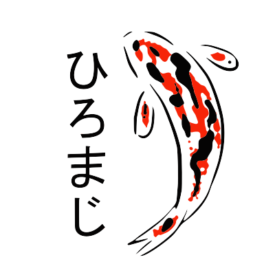

Home
Set characters
Practice あ → A
Practice A → あ
This Web app requires JavaScript to work!
You have not selected any or too few characters to learn! Please navigate to
the selection page.
.
?
?
?
?
?
A